tna — R Package Documentation
v1.1.0 — Transition Network Analysis
Source:vignettes/articles/new-docs.Rmd
new-docs.Rmdtna provides tools for performing Transition Network Analysis (TNA) to study relational dynamics. Build Markov models from sequence data, compute centrality measures, detect communities and cliques, and validate findings with bootstrapping and permutation tests.
Install:
install.packages("tna")
# or dev version:
devtools::install_github("sonsoleslp/tna")Requires R >= 4.1.0. All analysis objects have
print(), summary(), and plot()
methods.
Building Models
build_model()
Construct a transition network analysis model from sequence data.
Requires specifying type. For convenience, use the shortcut
functions: tna() = relative, ftna() =
frequency, ctna() = co-occurrence, atna() =
attention.
build_model(x, type = "relative", scaling = character(0L), cols = everything(),
params = list(), inits, begin_state, end_state)| Parameter | Description | Default |
|---|---|---|
x |
data.frame (wide), stslist,
matrix, or tna_data
|
— |
type |
"relative", "frequency",
"co-occurrence", "n-gram", "gap",
"window", "reverse",
"attention"
|
"relative" |
scaling |
"minmax", "max", "rank", or
empty vector |
character(0) |
params |
List: n_gram, max_gap,
window_size, weighted, direction,
decay, lambda, time,
duration
|
list() |
Returns: A tna object with
$weights, $inits, $labels,
$data.
# Using build_model with explicit type
model <- build_model(group_regulation, type = "relative")
# Shortcut functions (preferred)
model <- tna(group_regulation) # type = "relative"
model_f <- ftna(group_regulation) # type = "frequency"
model_c <- ctna(group_regulation) # type = "co-occurrence"
model_a <- atna(group_regulation) # type = "attention"
print(model)#> State Labels :
#>
#> adapt, cohesion, consensus, coregulate, discuss, emotion, monitor, plan, synthesis
#>
#> Transition Probability Matrix :
#>
#> adapt cohesion consensus coregulate discuss emotion
#> adapt 0.0000000000 0.27308448 0.47740668 0.02161100 0.05893910 0.11984283
#> cohesion 0.0029498525 0.02713864 0.49793510 0.11917404 0.05958702 0.11563422
#> consensus 0.0047400853 0.01485227 0.08200348 0.18770738 0.18802338 0.07268131
#> coregulate 0.0162436548 0.03604061 0.13451777 0.02335025 0.27360406 0.17208122
#> discuss 0.0713743356 0.04758289 0.32118451 0.08428246 0.19488737 0.10579600
#> emotion 0.0024673951 0.32534367 0.32040888 0.03419105 0.10186817 0.07684173
#> monitor 0.0111653873 0.05582694 0.15910677 0.05792045 0.37543615 0.09071877
#> plan 0.0009745006 0.02517460 0.29040117 0.01721618 0.06789021 0.14682475
#> synthesis 0.2346625767 0.03374233 0.46625767 0.04447853 0.06288344 0.07055215
#> monitor plan synthesis
#> adapt 0.03339882 0.01571709 0.000000000
#> cohesion 0.03303835 0.14100295 0.003539823
#> consensus 0.04661084 0.39579712 0.007584137
#> coregulate 0.08629442 0.23908629 0.018781726
#> discuss 0.02227284 0.01164262 0.140976968
#> emotion 0.03630596 0.09975326 0.002819880
#> monitor 0.01814375 0.21563154 0.016050244
#> plan 0.07552379 0.37420822 0.001786584
#> synthesis 0.01226994 0.07515337 0.000000000
#>
#> Initial Probabilities :
#>
#> adapt cohesion consensus coregulate discuss emotion monitor
#> 0.0115 0.0605 0.2140 0.0190 0.1755 0.1515 0.1440
#> plan synthesis
#> 0.2045 0.0195
summary(model)#> # A tibble: 13 × 2
#> metric value
#> * <chr> <dbl>
#> 1 Node Count 9 e+ 0
#> 2 Edge Count 7.8 e+ 1
#> 3 Network Density 1 e+ 0
#> 4 Mean Distance 4.72e- 2
#> 5 Mean Out-Strength 1 e+ 0
#> 6 SD Out-Strength 8.07e- 1
#> 7 Mean In-Strength 1 e+ 0
#> 8 SD In-Strength 6.80e-17
#> 9 Mean Out-Degree 8.67e+ 0
#> 10 SD Out-Degree 7.07e- 1
#> 11 Centralization (Out-Degree) 1.56e- 2
#> 12 Centralization (In-Degree) 1.56e- 2
#> 13 Reciprocity 9.86e- 1Model types
| Type | Description |
|---|---|
"relative" |
Transition probabilities (rows sum to 1). Default |
"frequency" |
Raw transition counts |
"co-occurrence" |
Co-occurrence within sequences |
"n-gram" |
Higher-order transitions |
"gap" |
Non-adjacent transitions, weighted by gap |
"window" |
Transitions within sliding window |
"reverse" |
Reverse order (reply networks) |
"attention" |
Exponential decay-weighted downstream pairs |
group_model() / group_tna()
Build a TNA model for each group. Accepts manual group assignments,
mhmm objects, or tna_clustering results. Most
tna functions accept group_tna directly — no need to
specify groups again.
group_model(x, group, type = "relative", scaling = character(0L),
groupwise = FALSE, cols = everything(), params = list(), na.rm = TRUE, ...)
# From mixture Markov model
model <- group_model(engagement_mmm)
print(model)#> Cluster 1 :
#> State Labels :
#>
#> Active, Average, Disengaged
#>
#> Transition Probability Matrix :
#>
#> Active Average Disengaged
#> Active 0.85985688 0.08919748 0.05094565
#> Average 0.31210322 0.54208478 0.14581200
#> Disengaged 0.04791061 0.16179397 0.79029542
#>
#> Initial Probabilities :
#>
#> Active Average Disengaged
#> 0.3397762 0.3234995 0.3367243
#>
#> Cluster 2 :
#> State Labels :
#>
#> Active, Average, Disengaged
#>
#> Transition Probability Matrix :
#>
#> Active Average Disengaged
#> Active 0.84090909 0.1590909 0.0000000
#> Average 0.09259259 0.6296296 0.2777778
#> Disengaged 0.15555556 0.5111111 0.3333333
#>
#> Initial Probabilities :
#>
#> Active Average Disengaged
#> 0.75000000 0.08333333 0.16666667
#>
#> Cluster 3 :
#> State Labels :
#>
#> Active, Average, Disengaged
#>
#> Transition Probability Matrix :
#>
#> Active Average Disengaged
#> Active 0.5833333 0.1250000 0.29166667
#> Average 0.1527778 0.8194444 0.02777778
#> Disengaged 0.0000000 0.6000000 0.40000000
#>
#> Initial Probabilities :
#>
#> Active Average Disengaged
#> 0 0 1
summary(model)#> # A tibble: 13 × 4
#> metric `Cluster 1` `Cluster 2` `Cluster 3`
#> * <chr> <dbl> <dbl> <dbl>
#> 1 Node Count 3 3 3
#> 2 Edge Count 9 8 8
#> 3 Network Density 1 1 1
#> 4 Mean Distance 0.111 0.239 0.302
#> 5 Mean Out-Strength 1 1 1
#> 6 SD Out-Strength 0.214 0.353 0.472
#> 7 Mean In-Strength 1 1 1
#> 8 SD In-Strength 0 0 0
#> 9 Mean Out-Degree 3 2.67 2.67
#> 10 SD Out-Degree 0 0.577 0.577
#> 11 Centralization (Out-Degree) 0 0.25 0.25
#> 12 Centralization (In-Degree) 0 0.25 0.25
#> 13 Reciprocity 1 0.8 0.8
# Manual groups
group <- c(rep("High", 1000), rep("Low", 1000))
model <- group_model(group_regulation, group = group)Plotting
All TNA analysis objects have plot() methods returning
qgraph or ggplot2 objects.
plot()
Plot a TNA model as a transition network.
plot(x, labels, colors, pie, cut, show_pruned = TRUE, pruned_edge_color = "pink",
edge.color = NA, edge.labels = TRUE, edge.label.position = 0.65,
layout = "circle", layout_args = list(), scale_nodes, scaling_factor = 0.5,
mar = rep(5, 4), theme = "colorblind", ...)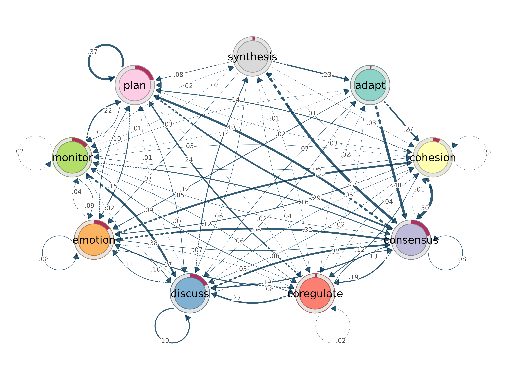
plot(model, layout = "spring", scale_nodes = "OutStrength")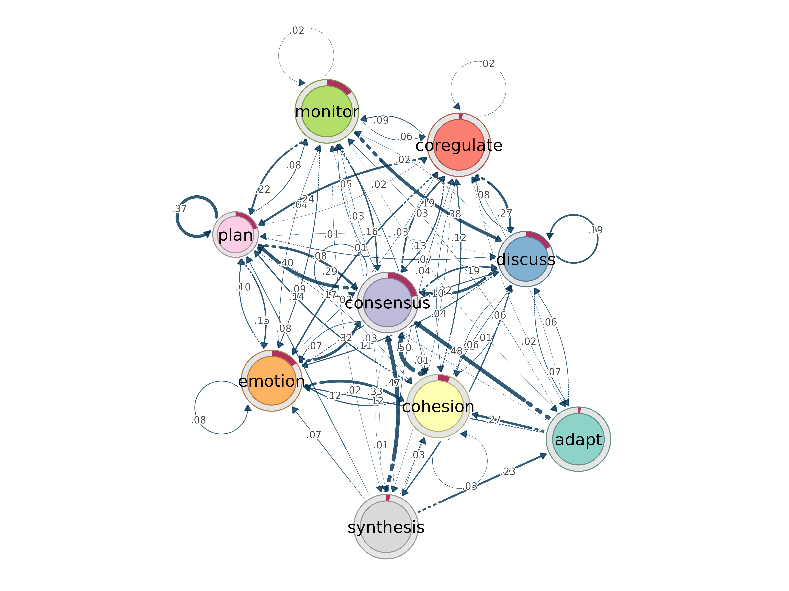
# Group model — side-by-side panels
gmodel <- group_model(engagement_mmm)
plot(gmodel)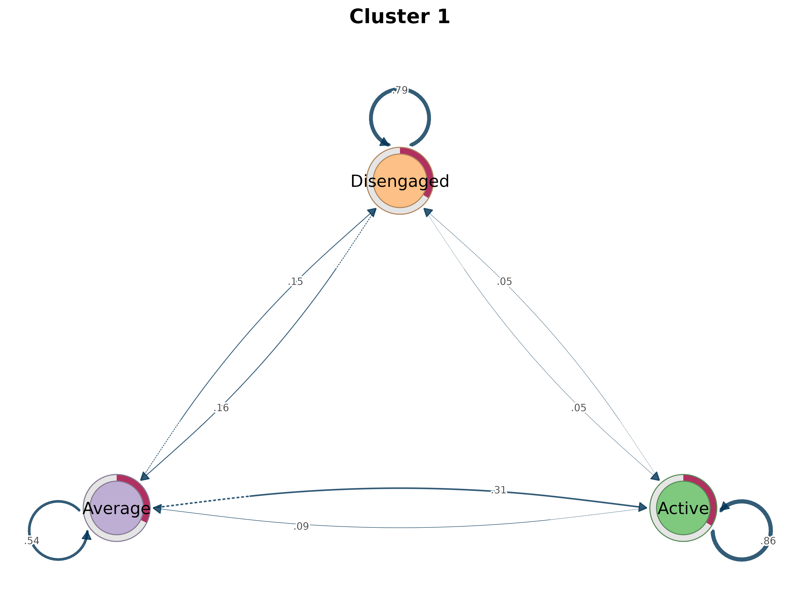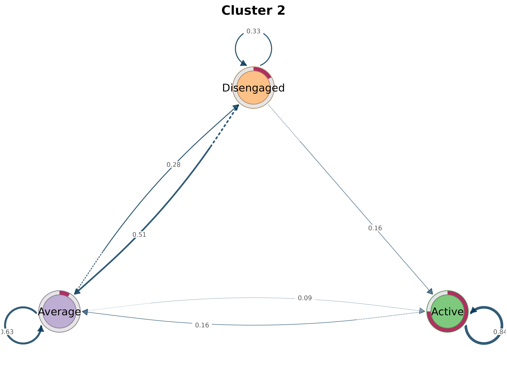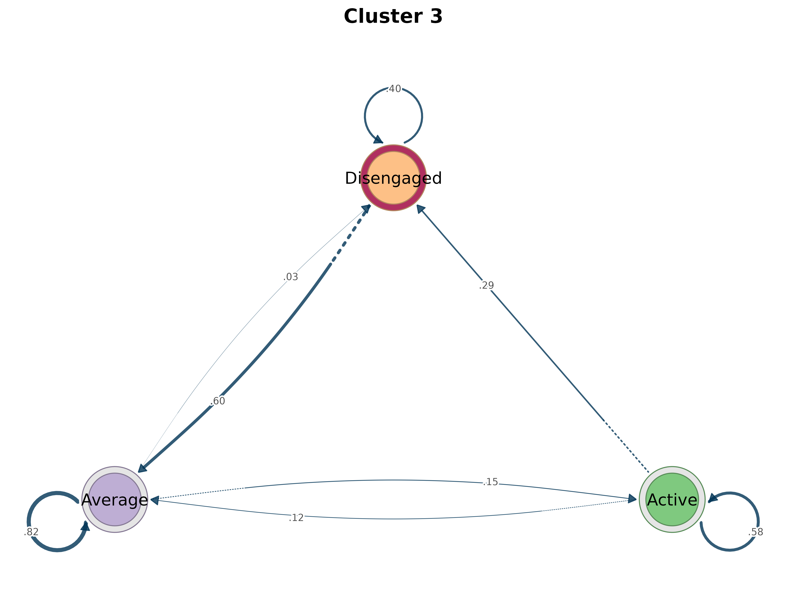
plot_frequencies()
Bar plot of state frequency distribution.
model <- tna(group_regulation)
plot_frequencies(model)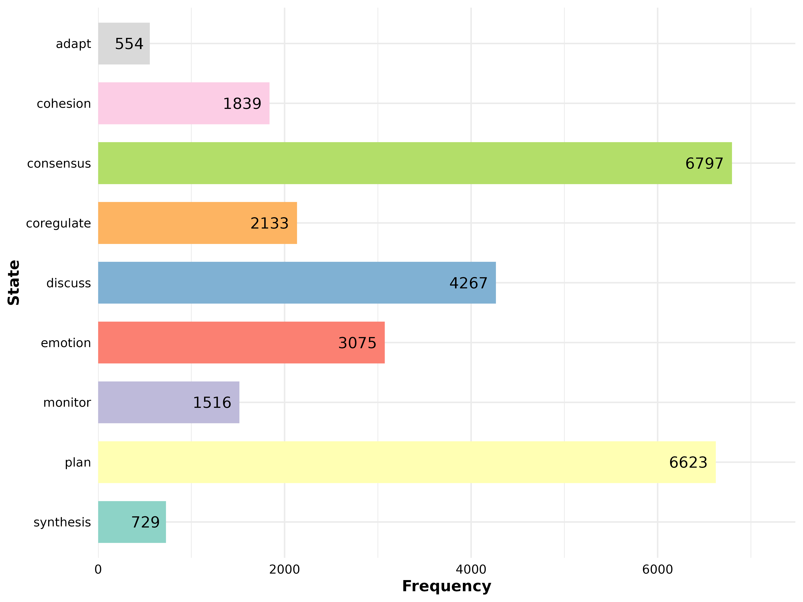
# Group comparison
gmodel <- group_model(engagement_mmm)
plot_frequencies(gmodel)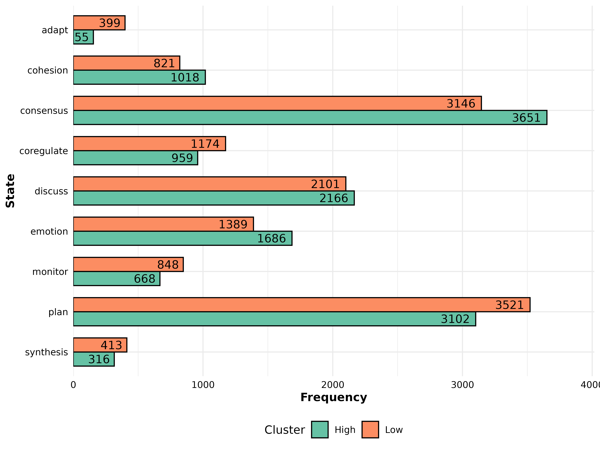
plot_mosaic()
Mosaic plot with chi-square test results. Requires frequency model
(ftna()).
model_f <- ftna(group_regulation)
plot_mosaic(model_f)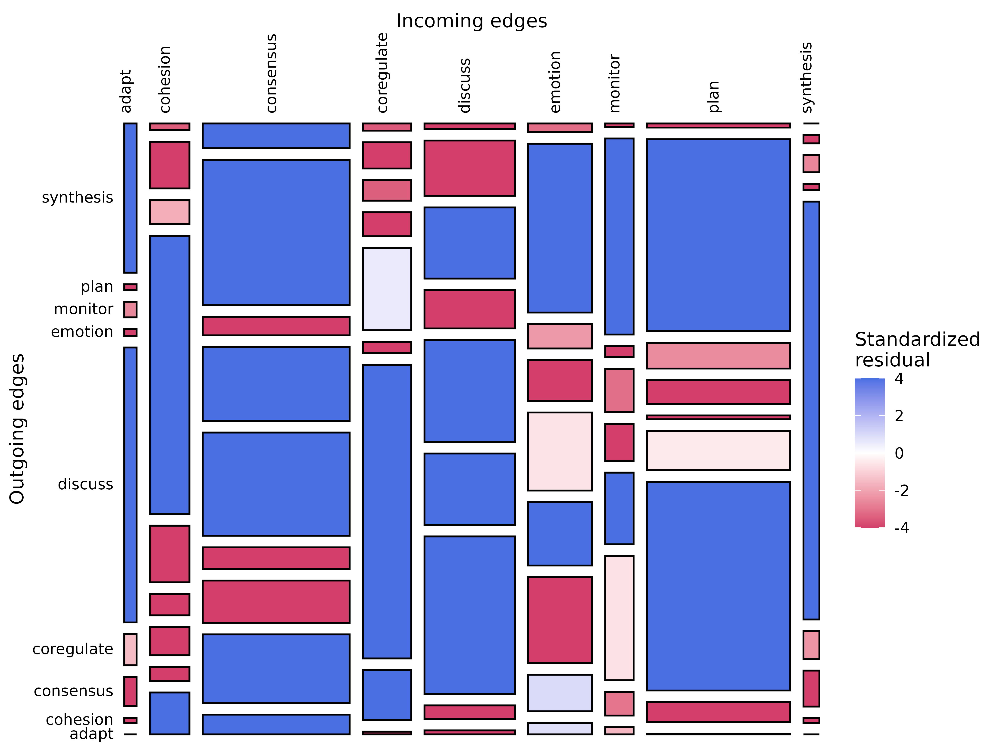
plot_sequences()
Sequence index plots or state distribution plots.
plot_sequences(x, cols = everything(), group, type = "index", scale = "proportion",
geom = "bar", include_na = FALSE, colors, na_color = "white",
sort_by, show_n = TRUE, border, title, legend_title, xlab, ylab,
tick = 5, ncol = 2L, ...)
plot_sequences(group_regulation)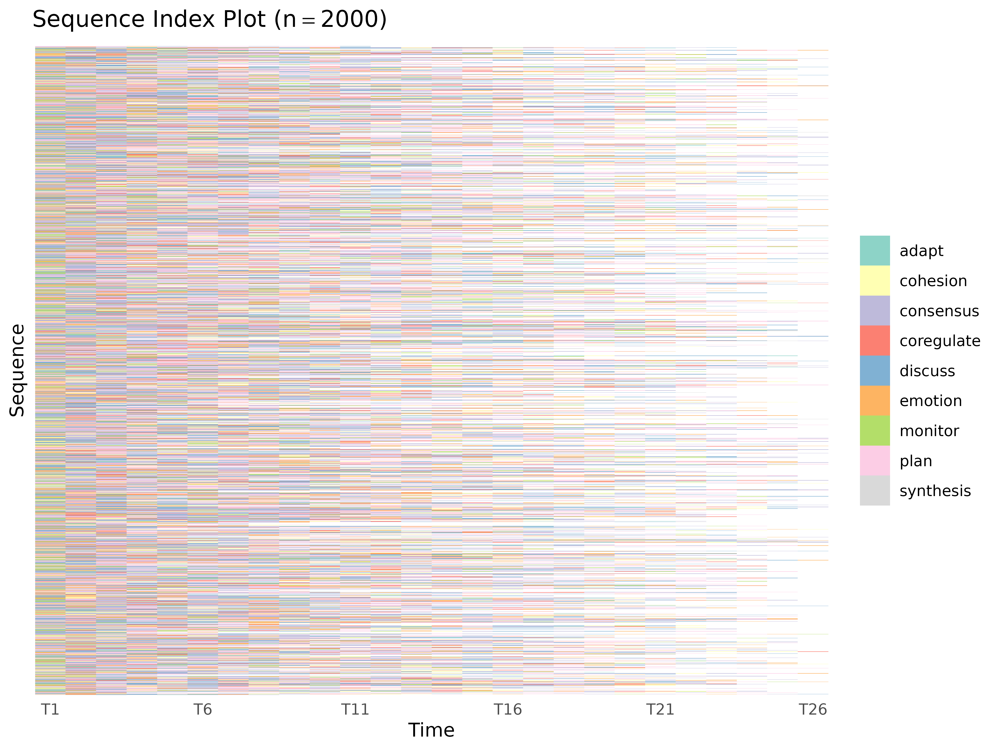
plot_sequences(group_regulation, type = "distribution")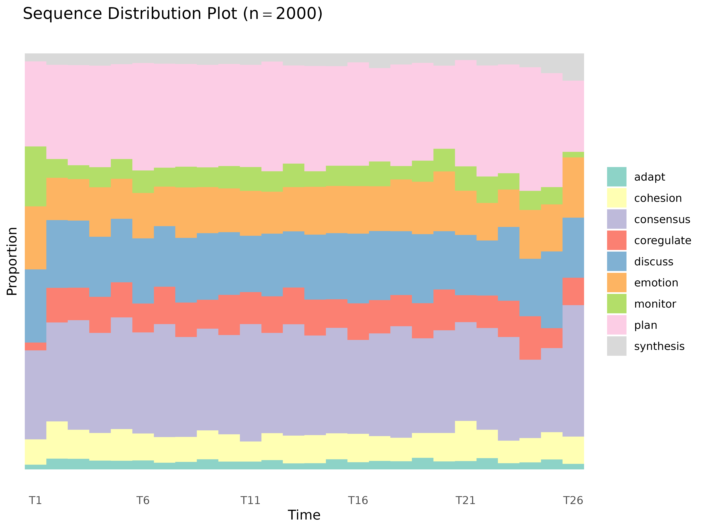
# Group comparison — pass group_tna directly
gmodel <- group_model(engagement_mmm)
plot_sequences(gmodel)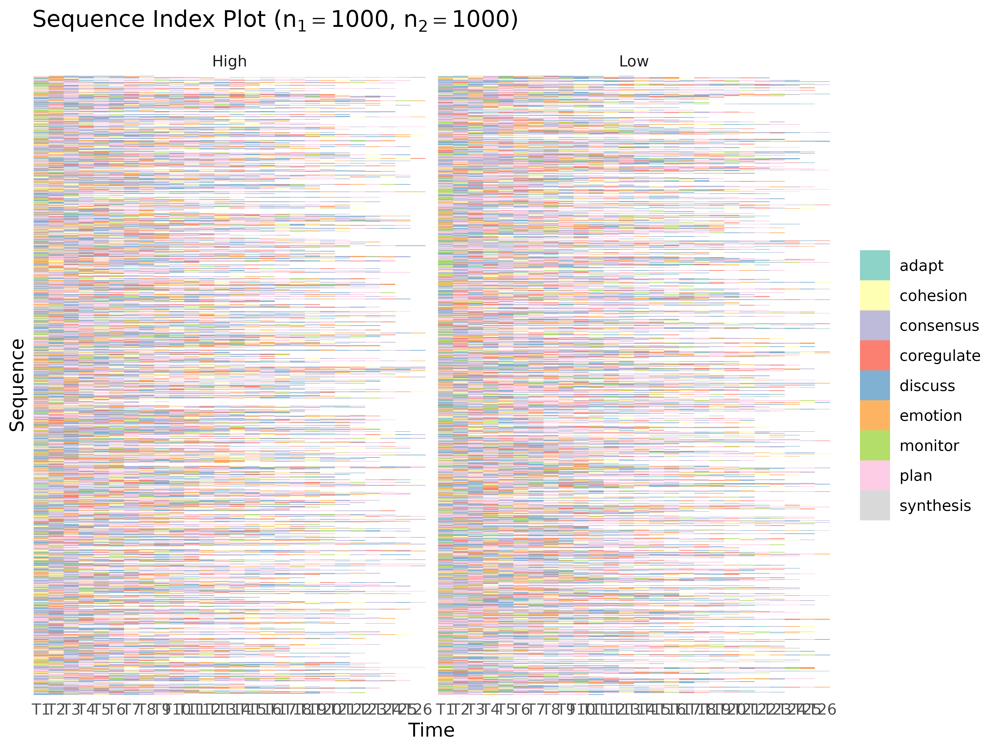
plot_compare()
Difference network between two models. Green = x greater, red = y greater.
model_a <- tna(group_regulation[1:1000, ])
model_b <- tna(group_regulation[1001:2000, ])
plot_compare(model_a, model_b)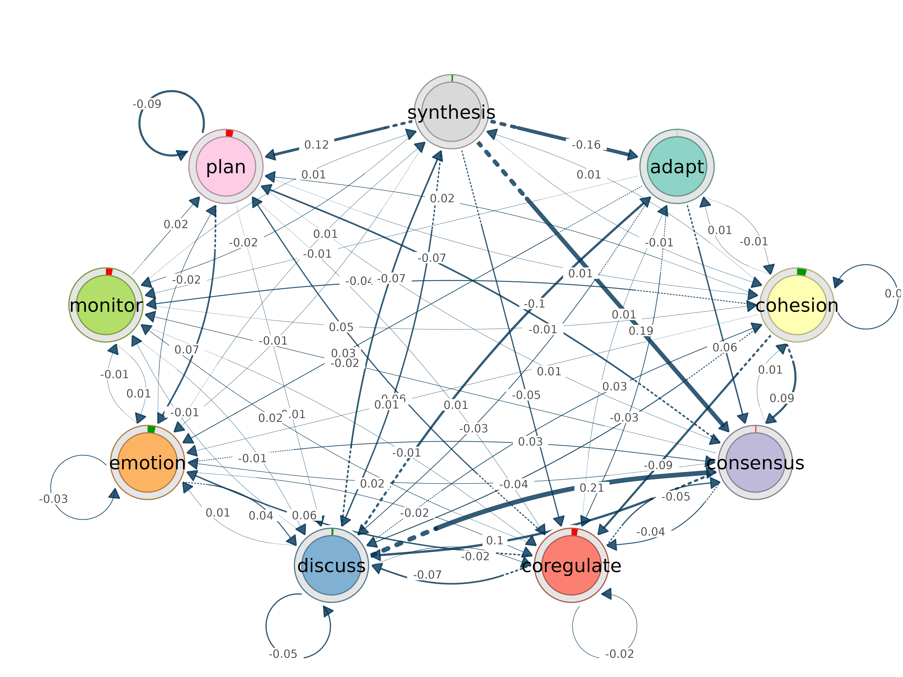
plot_associations()
Association network. Requires frequency model
(ftna()).
model_f <- ftna(group_regulation)
plot_associations(model_f)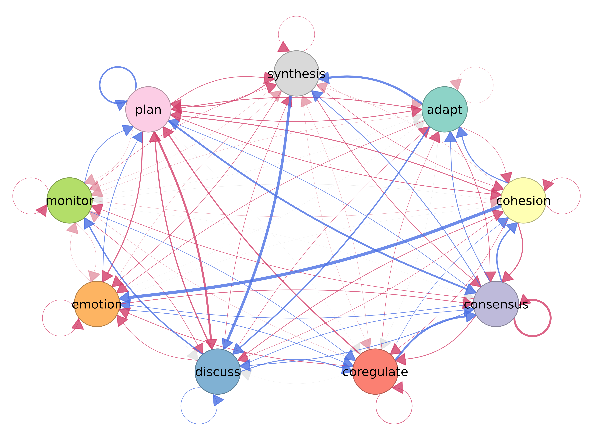
hist()
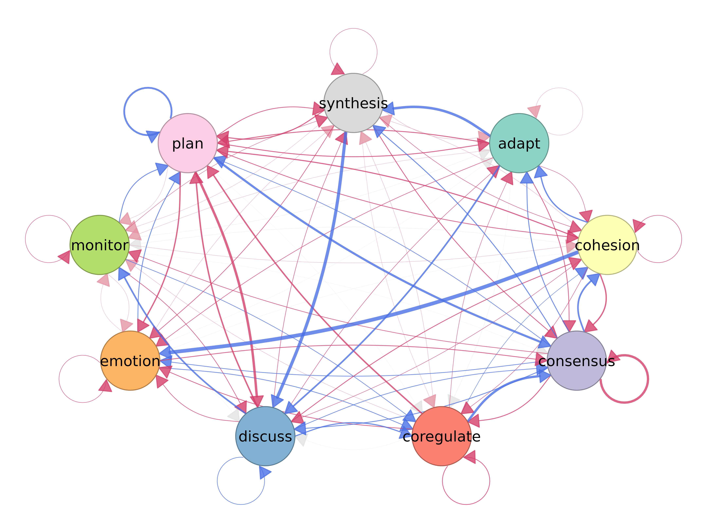
Additional plot methods
| Object | plot() produces |
|---|---|
tna_centralities |
Lollipop charts by measure |
tna_communities |
Network colored by community |
tna_cliques |
Individual clique subnetworks |
tna_bootstrap |
Significant edges only |
tna_permutation |
Significant edge differences |
tna_stability |
Stability curves with CS-coefficients |
tna_comparison |
Heatmap or difference viz |
tna_sequence_comparison |
Pattern comparison chart |
group_tna |
Side-by-side network plots |
Data Preparation
prepare_data()
Convert long-format event logs into wide-format sequences.
prepare_data(data, actor, time, action, order, time_threshold = 900,
custom_format = NULL, is_unix_time = FALSE,
unix_time_unit = "seconds", unused_fn = dplyr::first)
results <- prepare_data(
group_regulation_long,
actor = "Actor", time = "Time", action = "Action"
)
print(results$statistics)#> $total_sessions
#> [1] 2000
#>
#> $total_actions
#> [1] 27533
#>
#> $max_sequence_length
#> [1] 26
#>
#> $unique_users
#> [1] 2000
#>
#> $sessions_per_user
#> # A tibble: 2,000 × 2
#> Actor n_sessions
#> <int> <int>
#> 1 1 1
#> 2 2 1
#> 3 3 1
#> 4 4 1
#> 5 5 1
#> 6 6 1
#> 7 7 1
#> 8 8 1
#> 9 9 1
#> 10 10 1
#> # ℹ 1,990 more rows
#>
#> $actions_per_session
#> # A tibble: 2,000 × 2
#> .session_id n_actions
#> <chr> <int>
#> 1 1010 session1 26
#> 2 1015 session1 26
#> 3 1030 session1 26
#> 4 1092 session1 26
#> 5 1106 session1 26
#> 6 1107 session1 26
#> 7 1153 session1 26
#> 8 1184 session1 26
#> 9 1209 session1 26
#> 10 1267 session1 26
#> # ℹ 1,990 more rows
#>
#> $time_range
#> [1] "2025-01-01 08:01:16 UTC" "2025-01-01 13:03:20 UTC"
import_data()
Transform wide-format feature data into long-format sequence data.
import_data(data, cols, id_cols, window_size = 1, replace_zeros = TRUE)
import_onehot()
Import one-hot encoded data as co-occurrence network.
import_onehot(data, cols, window = 1L)
simulate()
Simulate sequence data from a TNA model (requires
type = "relative").
model <- tna(group_regulation)
sim <- simulate(model, nsim = 5, seed = 123, max_len = 10)
print(sim)#> T1 T2 T3 T4 T5 T6 T7
#> 1 emotion cohesion plan plan plan emotion plan
#> 2 monitor discuss consensus consensus plan plan consensus
#> 3 consensus coregulate cohesion consensus coregulate coregulate plan
#> 4 synthesis consensus plan consensus coregulate coregulate plan
#> 5 consensus plan plan emotion cohesion discuss discuss
#> T8 T9 T10
#> 1 consensus plan consensus
#> 2 plan plan consensus
#> 3 consensus emotion consensus
#> 4 plan emotion emotion
#> 5 discuss synthesis cohesionCentrality Measures
centralities()
Calculate centrality measures. Works on tna,
group_tna, and matrix.
centralities(x, loops = FALSE, normalize = FALSE, measures)| Measure | Description |
|---|---|
OutStrength |
Total weight of outgoing edges |
InStrength |
Total weight of incoming edges |
ClosenessIn / ClosenessOut /
Closeness
|
Closeness centrality variants |
Betweenness |
Geodesic betweenness |
BetweennessRSP |
Randomized shortest paths betweenness |
Diffusion |
Diffusion centrality |
Clustering |
Signed clustering coefficient |
model <- tna(group_regulation)
cm <- centralities(model)
print(cm)#> # A tibble: 9 × 10
#> state OutStrength InStrength ClosenessIn ClosenessOut Closeness Betweenness
#> * <fct> <dbl> <dbl> <dbl> <dbl> <dbl> <dbl>
#> 1 adapt 1 0.345 13.4 2.33 18.5 17
#> 2 cohesion 0.973 0.812 3.65 2.79 13.8 0
#> 3 consens… 0.918 2.67 0.798 4.34 11.5 0
#> 4 coregul… 0.977 0.567 4.55 2.31 5.97 5
#> 5 discuss 0.805 1.19 1.95 2.68 7.31 0
#> 6 emotion 0.923 0.894 1.57 3.13 14.5 0
#> 7 monitor 0.982 0.346 6.24 2.21 7.76 3
#> 8 plan 0.626 1.19 5.47 2.91 17.6 10
#> 9 synthes… 1 0.192 12.3 2.18 15.9 14
#> # ℹ 3 more variables: BetweennessRSP <dbl>, Diffusion <dbl>, Clustering <dbl>
plot(cm, ncol = 3, reorder = TRUE)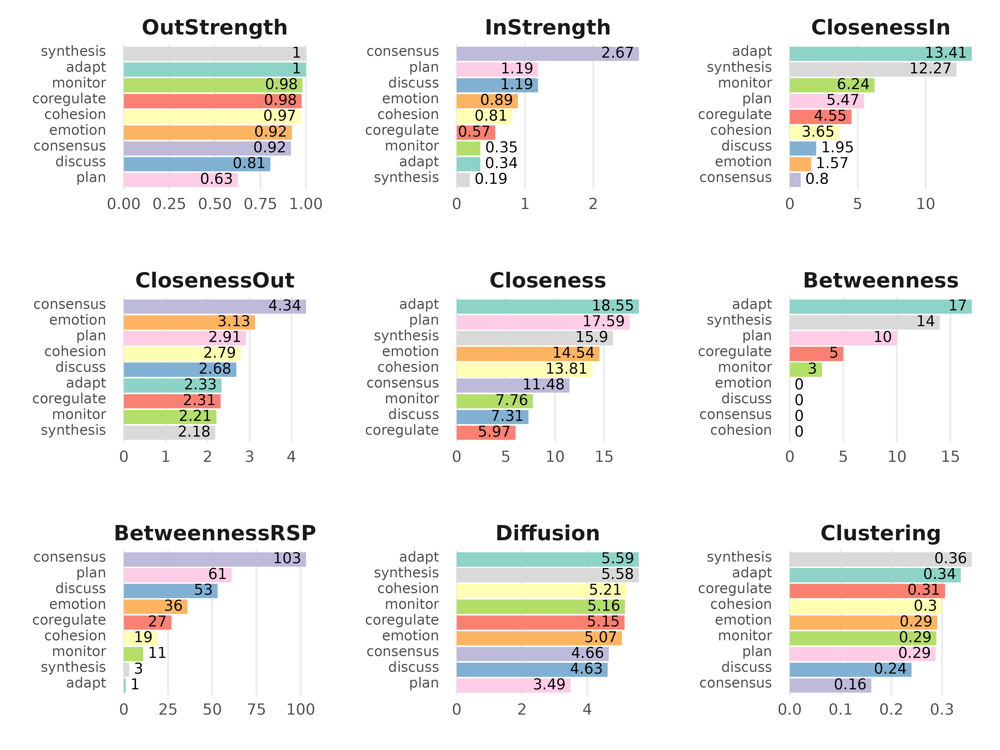
# On group_tna directly
gmodel <- group_model(engagement_mmm)
centralities(gmodel)#> # A tibble: 9 × 11
#> group state OutStrength InStrength ClosenessIn ClosenessOut Closeness
#> * <chr> <fct> <dbl> <dbl> <dbl> <dbl> <dbl>
#> 1 Cluster 1 Active 0.140 0.360 4.14 7.14 7.29
#> 2 Cluster 1 Average 0.458 0.251 4.42 2.95 4.42
#> 3 Cluster 1 Disengaged 0.210 0.197 5.08 5.40 5.40
#> 4 Cluster 2 Active 0.159 0.248 4.03 1.68 4.03
#> 5 Cluster 2 Average 0.370 0.670 2.11 2.7 2.93
#> 6 Cluster 2 Disengaged 0.667 0.278 1.40 2.13 2.48
#> 7 Cluster 3 Active 0.417 0.153 1.10 3.6 3.6
#> 8 Cluster 3 Average 0.181 0.725 1.38 5.54 6.55
#> 9 Cluster 3 Disengaged 0.6 0.319 5.54 0.739 5.54
#> # ℹ 4 more variables: Betweenness <dbl>, BetweennessRSP <dbl>, Diffusion <dbl>,
#> # Clustering <dbl>
betweenness_network()
Build network with edge betweenness as weights.
model <- tna(group_regulation)
bn <- betweenness_network(model)
print(bn)#> State Labels :
#>
#> adapt, cohesion, consensus, coregulate, discuss, emotion, monitor, plan, synthesis
#>
#> Edge Betweenness Matrix :
#>
#> adapt cohesion consensus coregulate discuss emotion monitor plan
#> adapt 0 0 1 1 0 0 0 3
#> cohesion 0 0 0 6 0 0 2 0
#> consensus 0 0 0 0 0 0 0 4
#> coregulate 8 1 0 0 0 0 0 0
#> discuss 6 0 1 0 0 0 0 0
#> emotion 0 0 0 0 1 0 0 0
#> monitor 0 0 0 0 7 0 0 0
#> plan 11 3 2 3 0 3 3 8
#> synthesis 4 4 3 0 5 6 3 0
#> synthesis
#> adapt 0
#> cohesion 3
#> consensus 0
#> coregulate 1
#> discuss 1
#> emotion 7
#> monitor 10
#> plan 0
#> synthesis 0
#>
#> Initial Probabilities :
#>
#> adapt cohesion consensus coregulate discuss emotion monitor
#> 0.0115 0.0605 0.2140 0.0190 0.1755 0.1515 0.1440
#> plan synthesis
#> 0.2045 0.0195
estimate_cs()
Centrality stability via subset sampling.
estimate_cs(x, loops = FALSE, normalize = FALSE,
measures = c("InStrength", "OutStrength", "Betweenness"),
iter = 1000, method = "pearson",
drop_prop = seq(0.1, 0.9, by = 0.1),
threshold = 0.7, certainty = 0.95, progressbar = FALSE)
model <- tna(group_regulation)
cs <- estimate_cs(model, measures = c("InStrength", "OutStrength"), iter = 100)
print(cs)#> Centrality Stability Coefficients
#>
#> InStrength OutStrength
#> 0.9 0.9
plot(cs)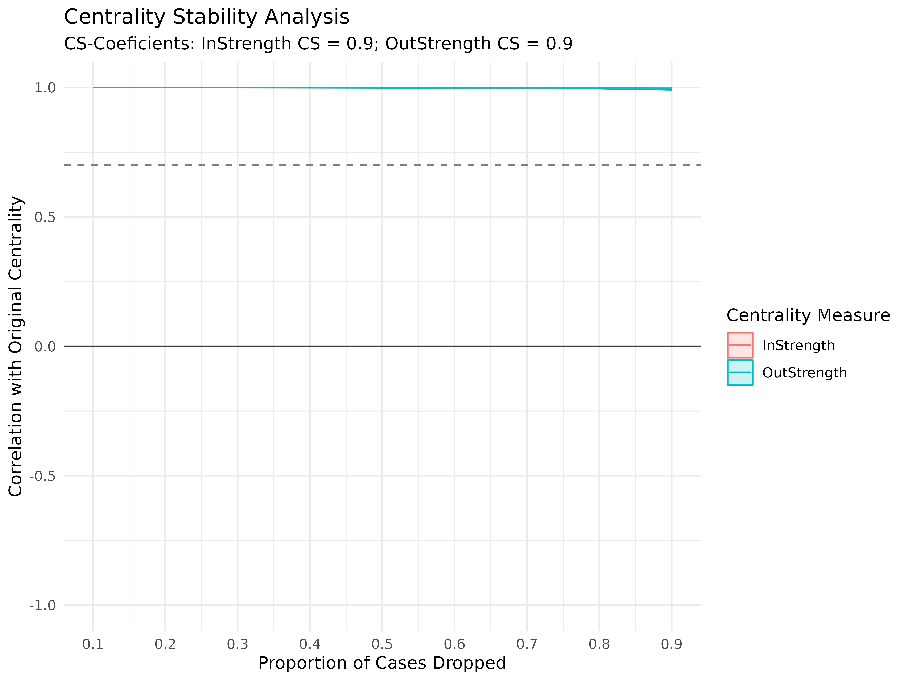
Network Structure
communities()
Detect communities using 7 igraph algorithms. Works on
tna and group_tna.
communities(x, methods, gamma = 1)
model <- tna(group_regulation)
comm <- communities(model)
print(comm)#> Number of communities found by each algorithm
#>
#> walktrap fast_greedy label_prop infomap
#> 1 3 1 1
#> edge_betweenness leading_eigen spinglass
#> 1 3 3
#>
#> Community assignments
#>
#> state walktrap fast_greedy label_prop infomap edge_betweenness
#> 1 adapt 1 1 1 1 1
#> 2 cohesion 1 1 1 1 1
#> 3 consensus 1 1 1 1 1
#> 4 coregulate 1 2 1 1 1
#> 5 discuss 1 2 1 1 1
#> 6 emotion 1 1 1 1 1
#> 7 monitor 1 2 1 1 1
#> 8 plan 1 3 1 1 1
#> 9 synthesis 1 1 1 1 1
#> leading_eigen spinglass
#> 1 1 3
#> 2 1 1
#> 3 2 3
#> 4 3 2
#> 5 3 2
#> 6 1 1
#> 7 2 2
#> 8 2 3
#> 9 3 3
plot(comm, method = "spinglass")
# On group_tna directly
gmodel <- group_model(engagement_mmm)
communities(gmodel)#> Cluster 1 :
#> Number of communities found by each algorithm
#>
#> walktrap fast_greedy label_prop infomap
#> 1 3 3 1
#> edge_betweenness leading_eigen spinglass
#> 3 2 1
#>
#> Community assignments
#>
#> state walktrap fast_greedy label_prop infomap edge_betweenness
#> 1 Active 1 1 1 1 1
#> 2 Average 1 2 2 1 2
#> 3 Disengaged 1 3 3 1 3
#> leading_eigen spinglass
#> 1 1 1
#> 2 1 1
#> 3 2 1
#>
#> Cluster 2 :
#> Number of communities found by each algorithm
#>
#> walktrap fast_greedy label_prop infomap
#> 1 2 3 1
#> edge_betweenness leading_eigen spinglass
#> 2 2 1
#>
#> Community assignments
#>
#> state walktrap fast_greedy label_prop infomap edge_betweenness
#> 1 Active 1 2 1 1 1
#> 2 Average 1 1 2 1 2
#> 3 Disengaged 1 1 3 1 2
#> leading_eigen spinglass
#> 1 1 1
#> 2 2 1
#> 3 2 1
#>
#> Cluster 3 :
#> Number of communities found by each algorithm
#>
#> walktrap fast_greedy label_prop infomap
#> 1 3 3 1
#> edge_betweenness leading_eigen spinglass
#> 3 2 1
#>
#> Community assignments
#>
#> state walktrap fast_greedy label_prop infomap edge_betweenness
#> 1 Active 1 1 1 1 1
#> 2 Average 1 2 2 1 2
#> 3 Disengaged 1 3 3 1 3
#> leading_eigen spinglass
#> 1 1 1
#> 2 2 1
#> 3 2 1
cliques()
Identify cliques (complete subgraphs) of a given size.
cliques(x, size = 2, threshold = 0, sum_weights = FALSE, ...)#> Number of 2-cliques = 35 (weight threshold = 0)
#> Showing 6 cliques starting from clique number 1
#>
#> Clique 1
#> monitor plan
#> monitor 0.01814375 0.2156315
#> plan 0.07552379 0.3742082
#>
#> Clique 2
#> emotion monitor
#> emotion 0.07684173 0.03630596
#> monitor 0.09071877 0.01814375
#>
#> Clique 3
#> emotion plan
#> emotion 0.07684173 0.09975326
#> plan 0.14682475 0.37420822
#>
#> Clique 4
#> discuss emotion
#> discuss 0.1948874 0.10579600
#> emotion 0.1018682 0.07684173
#>
#> Clique 5
#> discuss monitor
#> discuss 0.1948874 0.02227284
#> monitor 0.3754361 0.01814375
#>
#> Clique 6
#> discuss plan
#> discuss 0.19488737 0.01164262
#> plan 0.06789021 0.37420822
plot(cliq, n = 3, ask = FALSE)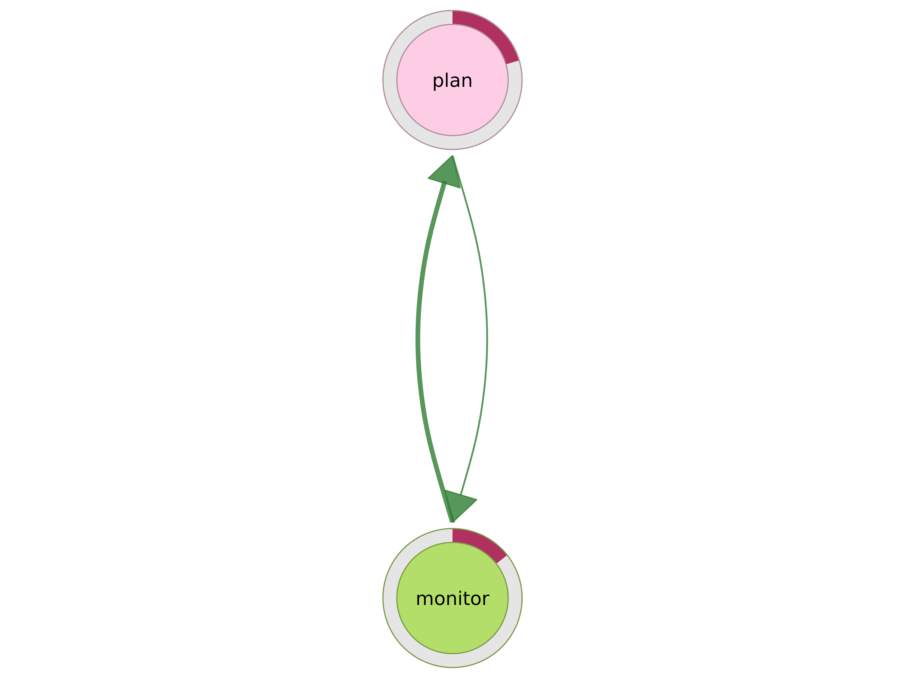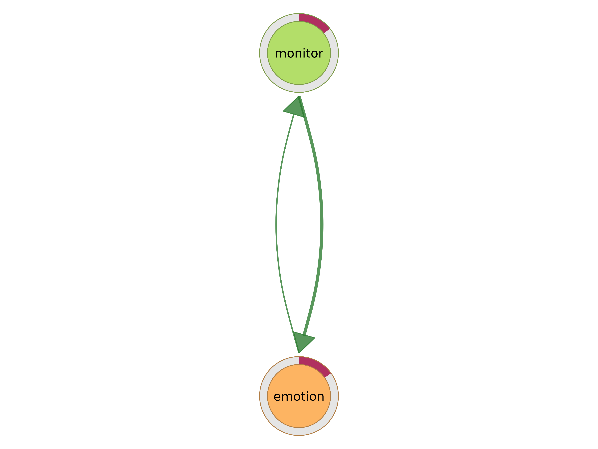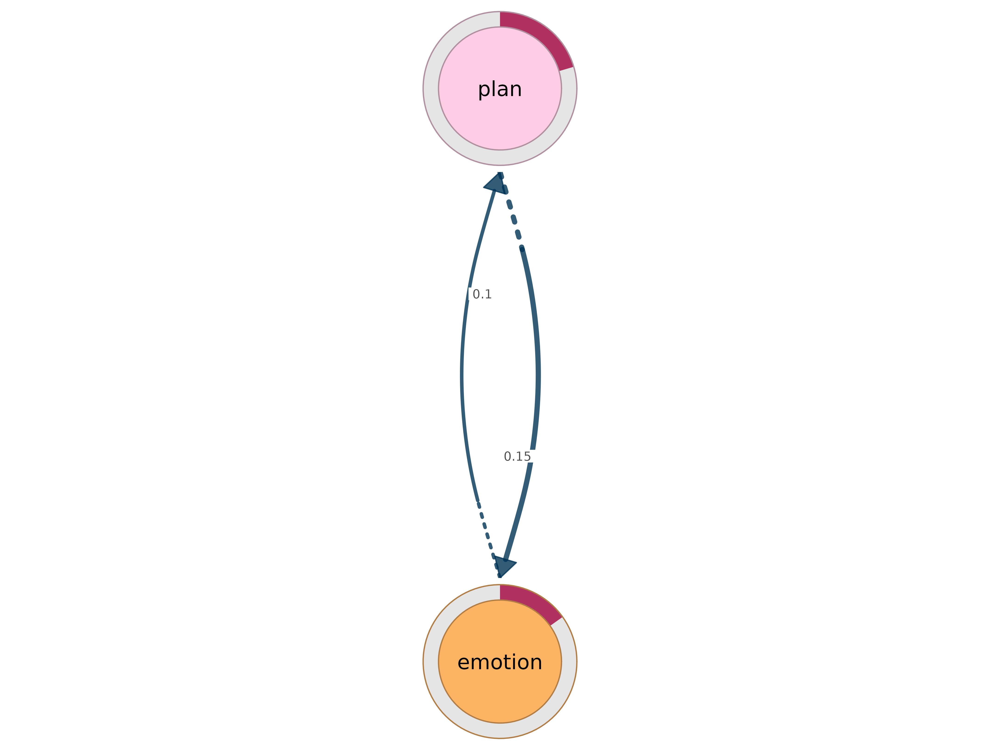
Comparison
compare()
Compare two TNA models with comprehensive metrics.
gmodel <- group_model(engagement_mmm)
comp <- compare(gmodel, i = 1, j = 2)
print(comp)#> Edge difference metrics
#> # A tibble: 9 × 16
#> source target weight_x weight_y raw_difference absolute_difference
#> <fct> <fct> <dbl> <dbl> <dbl> <dbl>
#> 1 Active Active 0.860 0.841 0.0189 0.0189
#> 2 Average Active 0.312 0.0926 0.220 0.220
#> 3 Disengaged Active 0.0479 0.156 -0.108 0.108
#> 4 Active Average 0.0892 0.159 -0.0699 0.0699
#> 5 Average Average 0.542 0.630 -0.0875 0.0875
#> 6 Disengaged Average 0.162 0.511 -0.349 0.349
#> 7 Active Disengaged 0.0509 0 0.0509 0.0509
#> 8 Average Disengaged 0.146 0.278 -0.132 0.132
#> 9 Disengaged Disengaged 0.790 0.333 0.457 0.457
#> # ℹ 10 more variables: squared_difference <dbl>, relative_difference <dbl>,
#> # similarity_strength_index <dbl>, difference_index <dbl>,
#> # rank_difference <dbl>, percentile_difference <dbl>,
#> # logarithmic_ratio <dbl>, standardized_weight_x <dbl>,
#> # standardized_weight_y <dbl>, standardized_score_inflation <dbl>
#>
#> Summary metrics of differences
#> # A tibble: 22 × 3
#> category metric value
#> <chr> <chr> <dbl>
#> 1 Weight Deviations Mean Abs. Diff. 0.166
#> 2 Weight Deviations Median Abs. Diff. 0.108
#> 3 Weight Deviations RMS Diff. 0.217
#> 4 Weight Deviations Max Abs. Diff. 0.457
#> 5 Weight Deviations Rel. Mean Abs. Diff. 0.498
#> 6 Weight Deviations CV Ratio 1.16
#> 7 Correlations Pearson 0.710
#> 8 Correlations Spearman 0.733
#> 9 Correlations Kendall 0.611
#> 10 Correlations Distance 0.500
#> # ℹ 12 more rows
#>
#> Network metrics
#> # A tibble: 13 × 3
#> metric x y
#> <chr> <dbl> <dbl>
#> 1 Node Count 3 3
#> 2 Edge Count 9 8
#> 3 Network Density 1 1
#> 4 Mean Distance 0.111 0.239
#> 5 Mean Out-Strength 1 1
#> 6 SD Out-Strength 0.214 0.353
#> 7 Mean In-Strength 1 1
#> 8 SD In-Strength 0 0
#> 9 Mean Out-Degree 3 2.67
#> 10 SD Out-Degree 0 0.577
#> 11 Centralization (Out-Degree) 0 0.25
#> 12 Centralization (In-Degree) 0 0.25
#> 13 Reciprocity 1 0.8
#>
#> Centrality differences
#> # A tibble: 27 × 5
#> state centrality x y difference
#> <fct> <chr> <dbl> <dbl> <dbl>
#> 1 Active OutStrength 0.140 0.159 -0.0189
#> 2 Active InStrength 0.360 0.248 0.112
#> 3 Active ClosenessIn 4.14 4.03 0.109
#> 4 Active ClosenessOut 7.14 1.68 5.46
#> 5 Active Closeness 7.29 4.03 3.26
#> 6 Active Betweenness 1 1 0
#> 7 Active BetweennessRSP 2 1 1
#> 8 Active Diffusion 0.202 0.250 -0.0474
#> 9 Active Clustering 0.308 0.789 -0.481
#> 10 Average OutStrength 0.458 0.370 0.0875
#> # ℹ 17 more rows
#>
#> Centrality correlations
#> # A tibble: 9 × 3
#> centrality Centrality correlation
#> <chr> <chr> <dbl>
#> 1 Betweenness Betweenness -0.5
#> 2 BetweennessRSP BetweennessRSP 0.327
#> 3 Closeness Closeness 0.805
#> 4 ClosenessIn ClosenessIn -0.883
#> 5 ClosenessOut ClosenessOut -1.000
#> 6 Clustering Clustering 0.350
#> 7 Diffusion Diffusion 0.300
#> 8 InStrength InStrength -0.252
#> 9 OutStrength OutStrength 0.113
plot(comp)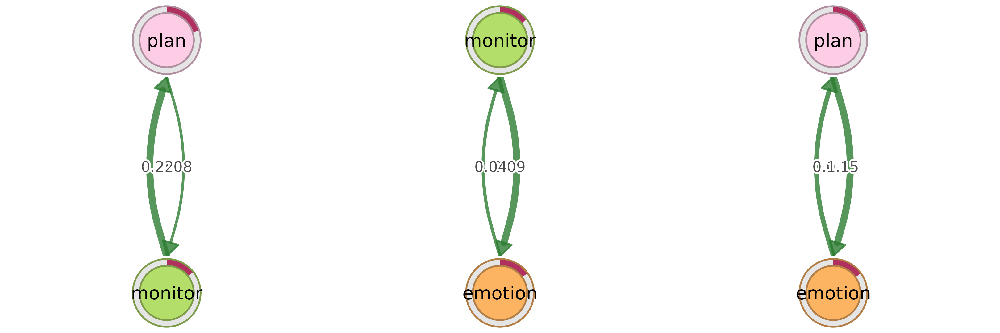
compare_sequences()
Compare subsequence patterns between groups. Pass
group_tna directly.
# For group_tna (groups already defined)
compare_sequences(x, sub, min_freq = 5L, correction = "bonferroni", ...)
gmodel <- group_model(engagement_mmm)
comp_seq <- compare_sequences(gmodel)
print(head(comp_seq, 10))#> pattern freq_Cluster 1 prop_Cluster 1
#> 1 Average-Average-Average-Average-Average 343 0.016975996
#> 2 Average-Average-Average-Average 680 0.032093638
#> 3 Average-Average-Average 1350 0.060890352
#> 4 Average-Average 2647 0.114321500
#> 5 Disengaged-Disengaged 5163 0.222985229
#> 6 Disengaged-Average-Average-Average-Average 142 0.007027963
#> 7 Disengaged-Average-Average-Average 288 0.013592600
#> 8 Active-Active-Active 8293 0.374047179
#> 9 Disengaged-Average-Average 565 0.025483740
#> 10 Active-Active 10093 0.435907403
#> freq_Cluster 2 prop_Cluster 2 freq_Cluster 3 prop_Cluster 3 statistic
#> 1 17 0.06827309 25 0.24752475 260.07541
#> 2 29 0.11111111 33 0.31132075 223.41192
#> 3 44 0.16117216 45 0.40540541 182.17437
#> 4 68 0.23859649 59 0.50862069 130.36348
#> 5 15 0.05263158 8 0.06896552 46.46808
#> 6 6 0.02409639 6 0.05940594 43.81859
#> 7 9 0.03448276 9 0.08490566 42.26144
#> 8 87 0.31868132 6 0.05405405 30.38654
#> 9 14 0.05128205 11 0.09909910 27.18310
#> 10 111 0.38947368 14 0.12068966 24.48683
#> p_value
#> 1 3.352303e-57
#> 2 3.067023e-49
#> 3 2.762730e-40
#> 4 4.919604e-29
#> 5 8.120539e-11
#> 6 3.054316e-10
#> 7 6.653426e-10
#> 8 2.521424e-07
#> 9 1.251021e-06
#> 10 4.816736e-06
plot(comp_seq)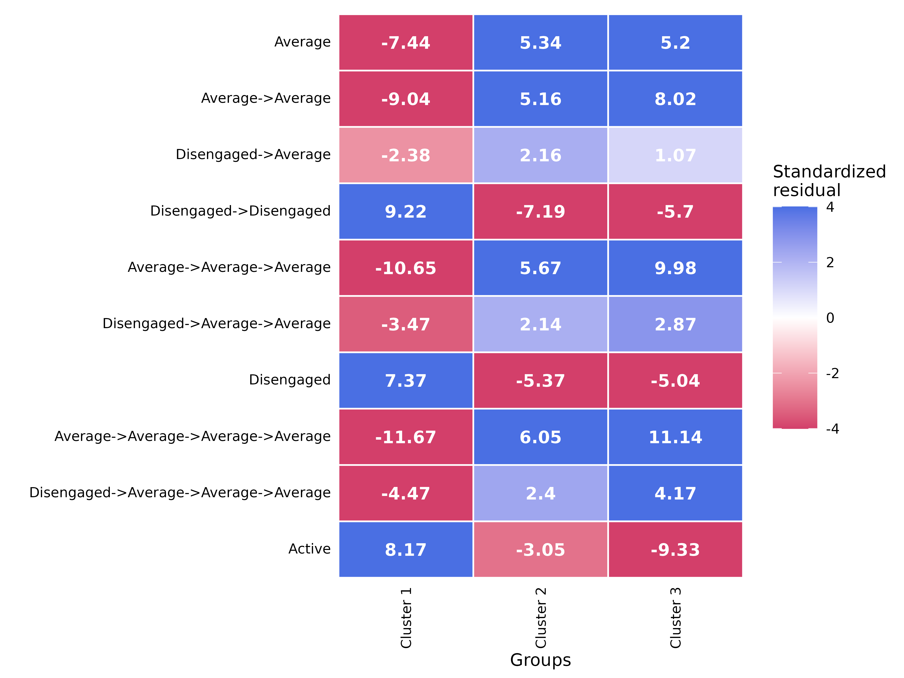
permutation_test()
Permutation tests for edge weight and centrality differences.
permutation_test(x, y, adjust = "none", iter = 1000, paired = FALSE,
level = 0.05, measures = character(0), ...)
model_x <- tna(group_regulation[1:200, ])
model_y <- tna(group_regulation[1001:1200, ])
perm <- permutation_test(model_x, model_y, iter = 100)
print(perm)#> # A tibble: 81 × 4
#> edge_name diff_true effect_size p_value
#> <chr> <dbl> <dbl> <dbl>
#> 1 adapt -> adapt 0 NaN 1
#> 2 cohesion -> adapt 0.00541 0.962 0.772
#> 3 consensus -> adapt -0.000679 -0.176 0.693
#> 4 coregulate -> adapt 0.00769 0.487 0.693
#> 5 discuss -> adapt -0.130 -6.48 0.00990
#> 6 emotion -> adapt 0.0101 1.57 0.228
#> 7 monitor -> adapt -0.00480 -0.376 0.980
#> 8 plan -> adapt 0.00339 1.45 0.0396
#> 9 synthesis -> adapt -0.159 -2.12 0.0594
#> 10 adapt -> cohesion -0.0907 -1.08 0.287
#> # ℹ 71 more rows
plot(perm)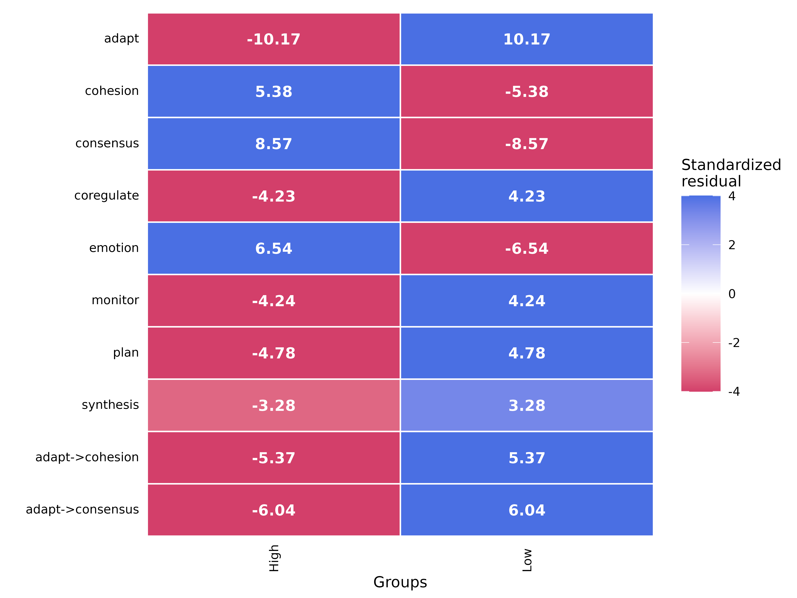
Validation
bootstrap()
Bootstrap transition networks for confidence intervals and significance.
bootstrap(x, iter = 1000, level = 0.05, method = "stability",
threshold, consistency_range = c(0.75, 1.25))#> Significant Edges
#>
#> from to weight p_value cr_lower cr_upper ci_lower
#> 5 discuss adapt 0.07137434 0.00990099 0.05353075 0.08921792 0.06313414
#> 9 synthesis adapt 0.23466258 0.00990099 0.17599693 0.29332822 0.20068921
#> 10 adapt cohesion 0.27308448 0.00990099 0.20481336 0.34135560 0.24158030
#> 12 consensus cohesion 0.01485227 0.01980198 0.01113920 0.01856533 0.01193169
#> 13 coregulate cohesion 0.03604061 0.03960396 0.02703046 0.04505076 0.02725508
#> 14 discuss cohesion 0.04758289 0.00990099 0.03568717 0.05947861 0.04287934
#> 15 emotion cohesion 0.32534367 0.00990099 0.24400775 0.40667959 0.31147012
#> 16 monitor cohesion 0.05582694 0.03960396 0.04187020 0.06978367 0.04489773
#> 17 plan cohesion 0.02517460 0.00990099 0.01888095 0.03146825 0.02166501
#> 19 adapt consensus 0.47740668 0.00990099 0.35805501 0.59675835 0.43029463
#> 20 cohesion consensus 0.49793510 0.00990099 0.37345133 0.62241888 0.47758115
#> 21 consensus consensus 0.08200348 0.00990099 0.06150261 0.10250435 0.07590941
#> 22 coregulate consensus 0.13451777 0.00990099 0.10088832 0.16814721 0.12203170
#> 23 discuss consensus 0.32118451 0.00990099 0.24088838 0.40148064 0.30642910
#> 24 emotion consensus 0.32040888 0.00990099 0.24030666 0.40051110 0.30628740
#> 25 monitor consensus 0.15910677 0.00990099 0.11933008 0.19888346 0.13905490
#> 26 plan consensus 0.29040117 0.00990099 0.21780088 0.36300146 0.27902082
#> 27 synthesis consensus 0.46625767 0.00990099 0.34969325 0.58282209 0.42635289
#> 29 cohesion coregulate 0.11917404 0.00990099 0.08938053 0.14896755 0.10484138
#> 30 consensus coregulate 0.18770738 0.00990099 0.14078053 0.23463422 0.17793859
#> 32 discuss coregulate 0.08428246 0.00990099 0.06321185 0.10535308 0.07806507
#> 33 emotion coregulate 0.03419105 0.02970297 0.02564329 0.04273881 0.02768219
#> 34 monitor coregulate 0.05792045 0.02970297 0.04344033 0.07240056 0.04718674
#> 35 plan coregulate 0.01721618 0.01980198 0.01291213 0.02152022 0.01456946
#> 38 cohesion discuss 0.05958702 0.01980198 0.04469027 0.07448378 0.04805913
#> 39 consensus discuss 0.18802338 0.00990099 0.14101754 0.23502923 0.17918980
#> 40 coregulate discuss 0.27360406 0.00990099 0.20520305 0.34200508 0.25217726
#> 41 discuss discuss 0.19488737 0.00990099 0.14616553 0.24360921 0.18388241
#> 42 emotion discuss 0.10186817 0.00990099 0.07640113 0.12733521 0.09262310
#> 43 monitor discuss 0.37543615 0.00990099 0.28157711 0.46929518 0.35439458
#> 44 plan discuss 0.06789021 0.00990099 0.05091765 0.08486276 0.06203541
#> 46 adapt emotion 0.11984283 0.04950495 0.08988212 0.14980354 0.09150852
#> 47 cohesion emotion 0.11563422 0.00990099 0.08672566 0.14454277 0.10052853
#> 48 consensus emotion 0.07268131 0.00990099 0.05451098 0.09085164 0.06464487
#> 49 coregulate emotion 0.17208122 0.00990099 0.12906091 0.21510152 0.15797309
#> 50 discuss emotion 0.10579600 0.00990099 0.07934700 0.13224500 0.09662248
#> 51 emotion emotion 0.07684173 0.00990099 0.05763130 0.09605217 0.06560577
#> 52 monitor emotion 0.09071877 0.00990099 0.06803908 0.11339846 0.08086259
#> 53 plan emotion 0.14682475 0.00990099 0.11011856 0.18353094 0.13840991
#> 56 cohesion monitor 0.03303835 0.04950495 0.02477876 0.04129794 0.02538009
#> 57 consensus monitor 0.04661084 0.00990099 0.03495813 0.05826355 0.04095338
#> 58 coregulate monitor 0.08629442 0.00990099 0.06472081 0.10786802 0.07552344
#> 59 discuss monitor 0.02227284 0.02970297 0.01670463 0.02784105 0.01752099
#> 60 emotion monitor 0.03630596 0.00990099 0.02722947 0.04538245 0.03188932
#> 62 plan monitor 0.07552379 0.00990099 0.05664285 0.09440474 0.06998561
#> 65 cohesion plan 0.14100295 0.00990099 0.10575221 0.17625369 0.12427217
#> 66 consensus plan 0.39579712 0.00990099 0.29684784 0.49474641 0.38438574
#> 67 coregulate plan 0.23908629 0.00990099 0.17931472 0.29885787 0.22074437
#> 69 emotion plan 0.09975326 0.00990099 0.07481495 0.12469158 0.08907974
#> 70 monitor plan 0.21563154 0.00990099 0.16172366 0.26953943 0.19605008
#> 71 plan plan 0.37420822 0.00990099 0.28065616 0.46776027 0.36277635
#> 77 discuss synthesis 0.14097697 0.00990099 0.10573273 0.17622121 0.13184377
#> ci_upper
#> 5 0.07860762
#> 9 0.26384994
#> 10 0.30736358
#> 12 0.01783178
#> 13 0.04261847
#> 14 0.05466626
#> 15 0.33895563
#> 16 0.06896453
#> 17 0.03005305
#> 19 0.51313544
#> 20 0.52498843
#> 21 0.08897798
#> 22 0.14999461
#> 23 0.33372183
#> 24 0.33887104
#> 25 0.17958918
#> 26 0.30027766
#> 27 0.50157115
#> 29 0.13574410
#> 30 0.19937757
#> 32 0.09241176
#> 33 0.04090146
#> 34 0.07117028
#> 35 0.02056220
#> 38 0.07086163
#> 39 0.19849720
#> 40 0.28932166
#> 41 0.20724875
#> 42 0.11310676
#> 43 0.40127191
#> 44 0.07351756
#> 46 0.14355688
#> 47 0.13265044
#> 48 0.07802254
#> 49 0.18822534
#> 50 0.11448084
#> 51 0.08722057
#> 52 0.10538042
#> 53 0.15397757
#> 56 0.04072509
#> 57 0.05260502
#> 58 0.09838029
#> 59 0.02656847
#> 60 0.04278069
#> 62 0.08154062
#> 65 0.15709105
#> 66 0.40602824
#> 67 0.26036238
#> 69 0.11181575
#> 70 0.23794050
#> 71 0.38685989
#> 77 0.15076106
#>
#> Non-significant Edges
#>
#> from to weight p_value cr_lower cr_upper
#> 2 cohesion adapt 0.0029498525 0.50495050 0.0022123894 0.003687316
#> 3 consensus adapt 0.0047400853 0.20792079 0.0035550640 0.005925107
#> 4 coregulate adapt 0.0162436548 0.14851485 0.0121827411 0.020304569
#> 6 emotion adapt 0.0024673951 0.60396040 0.0018505464 0.003084244
#> 7 monitor adapt 0.0111653873 0.24752475 0.0083740405 0.013956734
#> 8 plan adapt 0.0009745006 0.57425743 0.0007308754 0.001218126
#> 11 cohesion cohesion 0.0271386431 0.12871287 0.0203539823 0.033923304
#> 18 synthesis cohesion 0.0337423313 0.21782178 0.0253067485 0.042177914
#> 28 adapt coregulate 0.0216110020 0.38613861 0.0162082515 0.027013752
#> 31 coregulate coregulate 0.0233502538 0.15841584 0.0175126904 0.029187817
#> 36 synthesis coregulate 0.0444785276 0.24752475 0.0333588957 0.055598160
#> 37 adapt discuss 0.0589390963 0.16831683 0.0442043222 0.073673870
#> 45 synthesis discuss 0.0628834356 0.12871287 0.0471625767 0.078604294
#> 54 synthesis emotion 0.0705521472 0.06930693 0.0529141104 0.088190184
#> 55 adapt monitor 0.0333988212 0.37623762 0.0250491159 0.041748527
#> 61 monitor monitor 0.0181437544 0.18811881 0.0136078158 0.022679693
#> 63 synthesis monitor 0.0122699387 0.62376238 0.0092024540 0.015337423
#> 64 adapt plan 0.0157170923 0.49504950 0.0117878193 0.019646365
#> 68 discuss plan 0.0116426221 0.11881188 0.0087319666 0.014553278
#> 72 synthesis plan 0.0751533742 0.13861386 0.0563650307 0.093941718
#> 74 cohesion synthesis 0.0035398230 0.54455446 0.0026548673 0.004424779
#> 75 consensus synthesis 0.0075841365 0.07920792 0.0056881024 0.009480171
#> 76 coregulate synthesis 0.0187817259 0.12871287 0.0140862944 0.023477157
#> 78 emotion synthesis 0.0028198802 0.51485149 0.0021149101 0.003524850
#> 79 monitor synthesis 0.0160502442 0.37623762 0.0120376832 0.020062805
#> 80 plan synthesis 0.0017865844 0.54455446 0.0013399383 0.002233230
#> ci_lower ci_upper
#> 2 0.0008415960 0.006389991
#> 3 0.0030401391 0.006455883
#> 4 0.0108386241 0.021906386
#> 6 0.0010276024 0.004113290
#> 7 0.0062277837 0.017052441
#> 8 0.0001605705 0.001898135
#> 11 0.0200393111 0.035898288
#> 18 0.0228332704 0.049212811
#> 28 0.0100991344 0.035060976
#> 31 0.0166353937 0.030393448
#> 36 0.0289827756 0.063179593
#> 37 0.0415364439 0.081378757
#> 45 0.0436380427 0.084137840
#> 54 0.0487118922 0.087268213
#> 55 0.0189086355 0.052297941
#> 61 0.0117856393 0.023947392
#> 63 0.0062044973 0.021858790
#> 64 0.0041341463 0.027659688
#> 68 0.0085006892 0.015159285
#> 72 0.0520554646 0.096331383
#> 74 0.0012095016 0.005936067
#> 75 0.0058713213 0.009526504
#> 76 0.0127231050 0.025731465
#> 78 0.0010400863 0.004945777
#> 79 0.0094161447 0.023673745
#> 80 0.0006537102 0.002900489
plot(boot)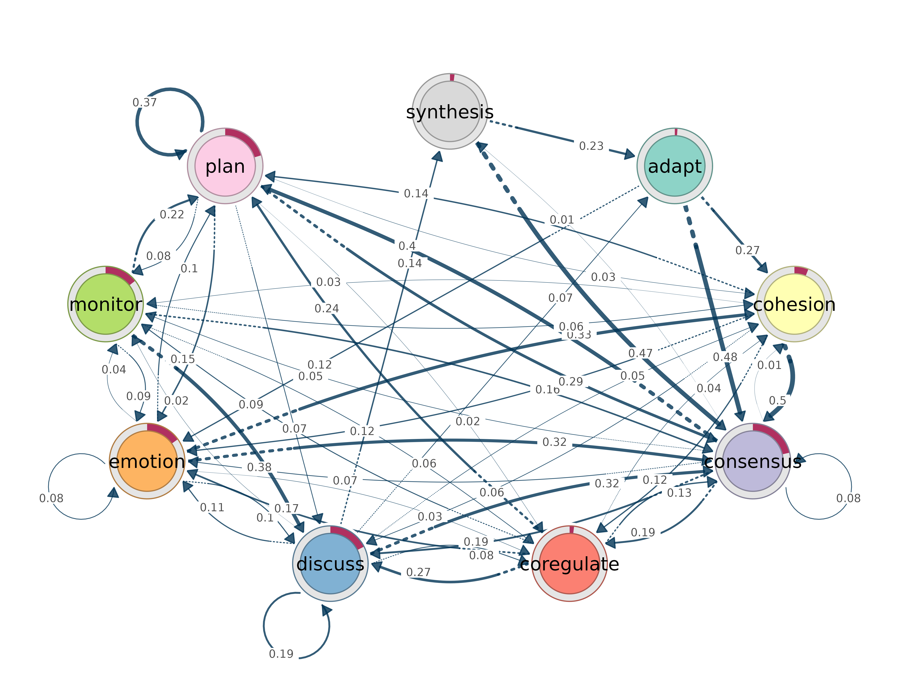
bootstrap_cliques()
Bootstrap cliques to assess stability.
bc <- bootstrap_cliques(model, size = 2, iter = 100)
print(bc)#> clique mean_weight p_values sig cr_lower cr_upper
#> 1 plan-synthesis 0.11278704 0.33663366 FALSE 0.084590283 0.14098381
#> 2 monitor-plan 0.17087683 0.26732673 FALSE 0.128157620 0.21359603
#> 3 monitor-synthesis 0.01161598 0.85148515 FALSE 0.008711988 0.01451998
#> 4 emotion-monitor 0.05550255 0.51485149 FALSE 0.041626916 0.06937819
#> 5 emotion-plan 0.17440699 0.04950495 TRUE 0.130805243 0.21800874
#> 6 emotion-synthesis 0.03755344 0.79207921 FALSE 0.028165080 0.04694180
#> 7 discuss-emotion 0.11984832 0.83168317 FALSE 0.089886239 0.14981040
#> 8 discuss-monitor 0.15268503 0.94059406 FALSE 0.114513772 0.19085629
#> 9 discuss-plan 0.16215710 0.53465347 FALSE 0.121617828 0.20269638
#> 10 discuss-synthesis 0.09968694 0.17821782 FALSE 0.074765208 0.12460868
#> 11 coregulate-discuss 0.14403104 0.91089109 FALSE 0.108023277 0.18003880
#> 12 coregulate-emotion 0.07661606 0.48514851 FALSE 0.057462047 0.09577008
#> 13 coregulate-monitor 0.04642722 0.48514851 FALSE 0.034820413 0.05803402
#> 14 coregulate-plan 0.16346524 0.46534653 FALSE 0.122598927 0.20433154
#> 15 coregulate-synthesis 0.02165263 0.88118812 FALSE 0.016239470 0.02706578
#> 16 consensus-coregulate 0.10689472 0.28712871 FALSE 0.080171039 0.13361840
#> 17 consensus-discuss 0.19652469 0.02970297 TRUE 0.147393514 0.24565586
#> 18 consensus-emotion 0.13798385 0.13861386 FALSE 0.103487888 0.17247981
#> 19 consensus-monitor 0.07646621 0.82178218 FALSE 0.057349657 0.09558276
#> 20 consensus-plan 0.28560250 0.00990099 TRUE 0.214201873 0.35700312
#> 21 consensus-synthesis 0.13896132 0.49504950 FALSE 0.104220990 0.17370165
#> 22 cohesion-consensus 0.15548237 0.47524752 FALSE 0.116611779 0.19435297
#> 23 cohesion-coregulate 0.05142589 0.72277228 FALSE 0.038569415 0.06428236
#> 24 cohesion-discuss 0.08229898 0.44554455 FALSE 0.061724236 0.10287373
#> 25 cohesion-emotion 0.13623957 0.16831683 FALSE 0.102179675 0.17029946
#> 26 cohesion-monitor 0.03353692 0.75247525 FALSE 0.025152690 0.04192115
#> 27 cohesion-plan 0.14188110 0.22772277 FALSE 0.106410827 0.17735138
#> 28 cohesion-synthesis 0.01610520 0.70297030 FALSE 0.012078900 0.02013150
#> 29 adapt-cohesion 0.07579324 0.77227723 FALSE 0.056844933 0.09474155
#> 30 adapt-consensus 0.14103756 0.63366337 FALSE 0.105778170 0.17629695
#> 31 adapt-coregulate 0.01530123 0.86138614 FALSE 0.011475921 0.01912653
#> 32 adapt-discuss 0.08130020 0.99009901 FALSE 0.060975150 0.10162525
#> 33 adapt-emotion 0.04978799 0.91089109 FALSE 0.037340992 0.06223499
#> 34 adapt-monitor 0.01567699 0.81188119 FALSE 0.011757743 0.01959624
#> 35 adapt-plan 0.09772495 0.31683168 FALSE 0.073293715 0.12215619
#> 36 adapt-synthesis 0.05866564 0.74257426 FALSE 0.043999233 0.07333206
#> ci_lower ci_upper
#> 1 0.061363246 0.19557984
#> 2 0.142424822 0.25720220
#> 3 0.000000000 0.04551091
#> 4 0.036342593 0.10901562
#> 5 0.136808328 0.21606595
#> 6 0.000000000 0.06920021
#> 7 0.042457146 0.10618222
#> 8 0.034539336 0.12349454
#> 9 0.092573973 0.15654123
#> 10 0.062761736 0.12302083
#> 11 0.038437500 0.11346411
#> 12 0.046515015 0.14056732
#> 13 0.022727273 0.07378840
#> 14 0.092377792 0.16537295
#> 15 0.000000000 0.02901261
#> 16 0.052767466 0.13077268
#> 17 0.179408082 0.24108674
#> 18 0.096172376 0.17391324
#> 19 0.074482230 0.18571552
#> 20 0.231593898 0.29948132
#> 21 0.106407408 0.23811637
#> 22 0.151836529 0.23325935
#> 23 0.037805607 0.12120968
#> 24 0.032193548 0.11105786
#> 25 0.085015369 0.15421856
#> 26 0.022155998 0.08344083
#> 27 0.086138111 0.15822773
#> 28 0.000000000 0.03437500
#> 29 0.007142857 0.22625000
#> 30 0.015957447 0.24653698
#> 31 0.000000000 0.03234375
#> 32 0.009609693 0.05444010
#> 33 0.000000000 0.18301815
#> 34 0.000000000 0.04551091
#> 35 0.057015650 0.09983392
#> 36 0.000000000 0.08645833
prune()
Remove weak edges. Four methods available.
prune(x, method = "threshold", threshold = 0.1, lowest = 0.05,
level = 0.5, boot = NULL, ...)
model <- tna(group_regulation)
pruned_t <- prune(model, method = "threshold", threshold = 0.1)
pruned_p <- prune(model, method = "lowest", lowest = 0.05)
pruned_d <- prune(model, method = "disparity", level = 0.5)
pruning_details(pruned_t)#> **Pruning Details**
#>
#> Method used: User-specified threshold (0.1)
#> Number of removed edges: 49
#> Number of retained edges: 29
#>
#> **Removed edges**
#>
#> from to weight
#> 1 cohesion adapt 0.0029498525
#> 2 consensus adapt 0.0047400853
#> 3 coregulate adapt 0.0162436548
#> 4 discuss adapt 0.0713743356
#> 5 emotion adapt 0.0024673951
#> 6 monitor adapt 0.0111653873
#> 7 plan adapt 0.0009745006
#> 8 cohesion cohesion 0.0271386431
#> 9 consensus cohesion 0.0148522673
#> 10 coregulate cohesion 0.0360406091
#> 11 discuss cohesion 0.0475828904
#> 12 monitor cohesion 0.0558269365
#> 13 plan cohesion 0.0251745980
#> 14 synthesis cohesion 0.0337423313
#> 15 consensus consensus 0.0820034761
#> 16 adapt coregulate 0.0216110020
#> 17 coregulate coregulate 0.0233502538
#> 18 discuss coregulate 0.0842824601
#> 19 emotion coregulate 0.0341910469
#> 20 monitor coregulate 0.0579204466
#> 21 plan coregulate 0.0172161767
#> 22 synthesis coregulate 0.0444785276
#> 23 adapt discuss 0.0589390963
#> 24 cohesion discuss 0.0595870206
#> 25 plan discuss 0.0678902063
#> 26 synthesis discuss 0.0628834356
#> 27 consensus emotion 0.0726813083
#> 28 emotion emotion 0.0768417342
#> 29 monitor emotion 0.0907187718
#> 30 synthesis emotion 0.0705521472
#> 31 adapt monitor 0.0333988212
#> 32 cohesion monitor 0.0330383481
#> 33 consensus monitor 0.0466108390
#> 34 coregulate monitor 0.0862944162
#> 35 discuss monitor 0.0222728423
#> 36 emotion monitor 0.0363059570
#> 37 monitor monitor 0.0181437544
#> 38 plan monitor 0.0755237941
#> 39 synthesis monitor 0.0122699387
#> 40 adapt plan 0.0157170923
#> 41 discuss plan 0.0116426221
#> 42 emotion plan 0.0997532605
#> 43 synthesis plan 0.0751533742
#> 44 cohesion synthesis 0.0035398230
#> 45 consensus synthesis 0.0075841365
#> 46 coregulate synthesis 0.0187817259
#> 47 emotion synthesis 0.0028198802
#> 48 monitor synthesis 0.0160502442
#> 49 plan synthesis 0.0017865844
plot(pruned_t)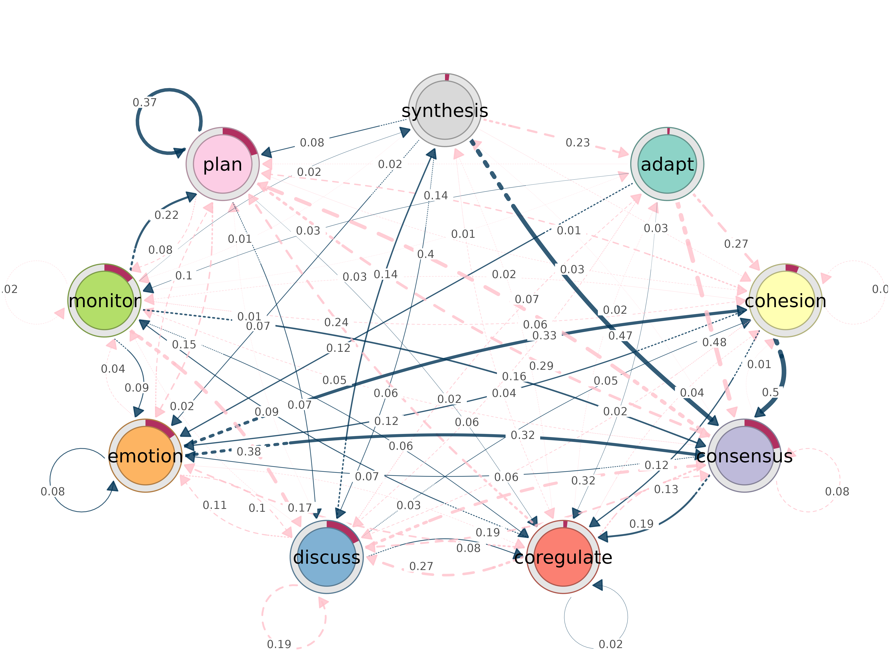
Clustering
cluster_sequences()
Cluster sequences using string distance-based dissimilarity.
cluster_sequences(data, k, dissimilarity = "hamming", method = "pam",
na_syms = c("*", "%"), weighted = FALSE, lambda = 1, ...)
result <- cluster_sequences(group_regulation[1:200, ], k = 3, dissimilarity = "osa")
print(result)#> Clustering method: pam
#> Number of clusters: 3
#> Silhouette score: 0.1678702
#> Cluster sizes:
#> 1 2 3
#> 63 66 71
# Pass directly to group_model
gmodel_clust <- group_model(result)
plot(gmodel_clust)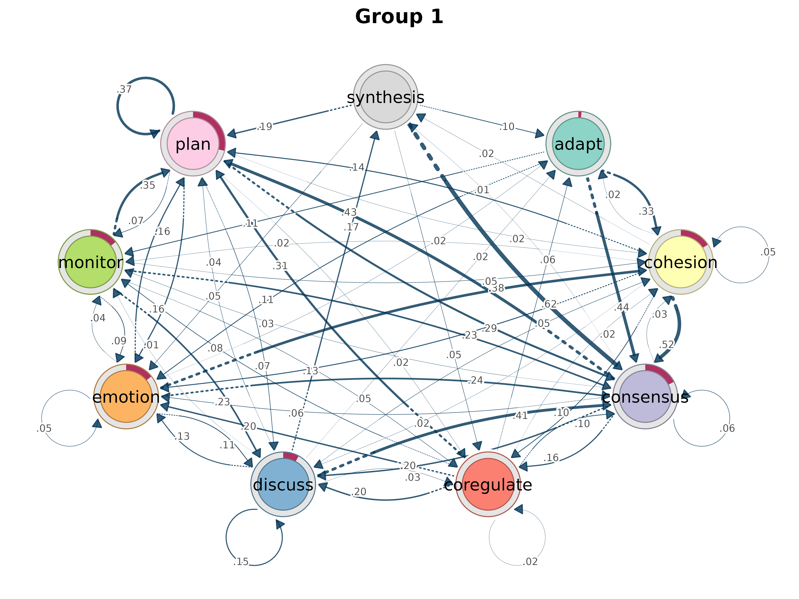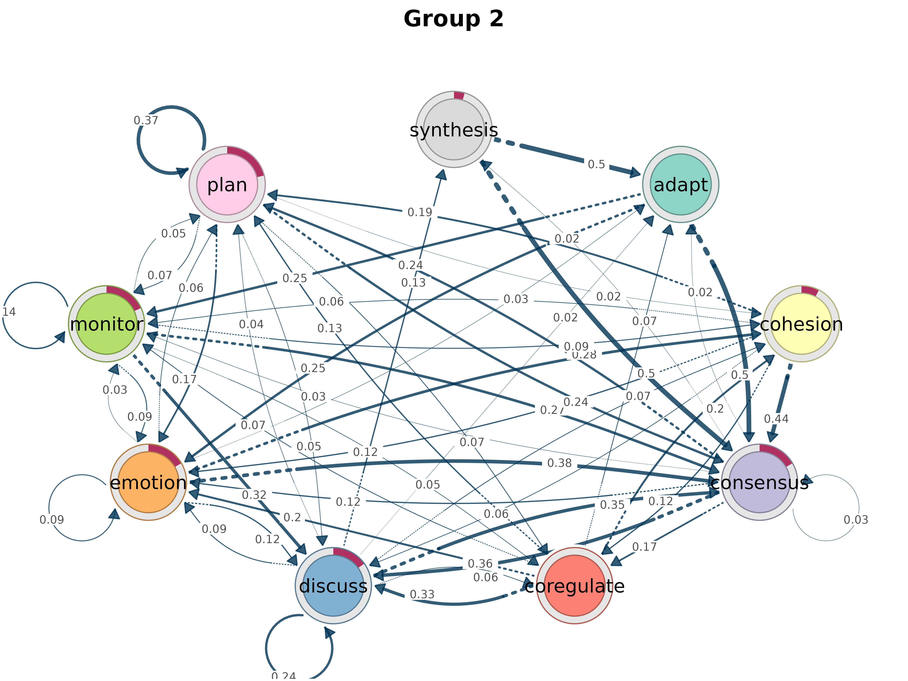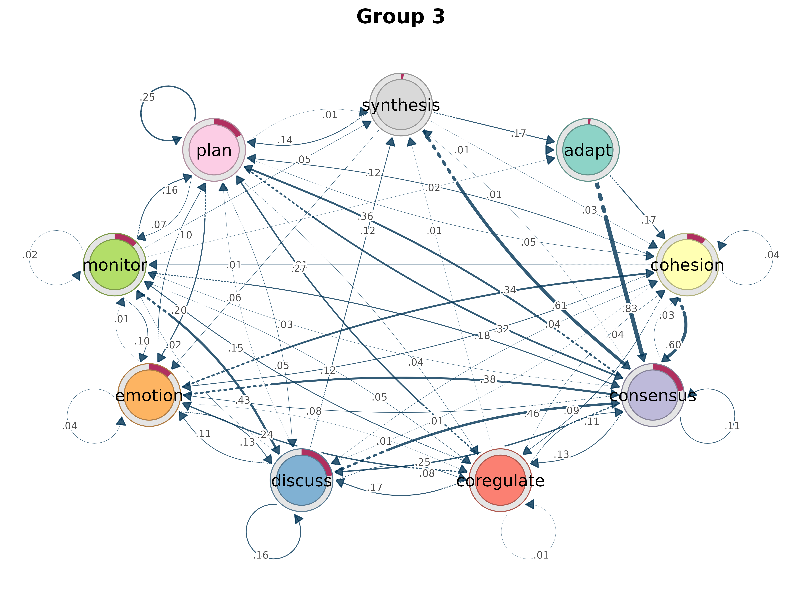
rename_groups()
gmodel <- group_model(engagement_mmm)
gmodel_renamed <- rename_groups(gmodel, c("A", "B", "C"))
cat("Original:", names(group_model(engagement_mmm)), "\n")#> Original: Cluster 1 Cluster 2 Cluster 3#> Renamed: A B C
mmm_stats()
mmm_stats(engagement_mmm)#> cluster variable estimate std_error ci_lower ci_upper z_value
#> 1 Cluster 2 (Intercept) -2.640329 0.1274911 -2.890207 -2.390451 -20.70991
#> 2 Cluster 3 (Intercept) -4.512131 0.3157501 -5.130990 -3.893272 -14.29020
#> p_value
#> 1 0
#> 2 0Summary & Conversion
summary()
#> # A tibble: 13 × 2
#> metric value
#> * <chr> <dbl>
#> 1 Node Count 9 e+ 0
#> 2 Edge Count 7.8 e+ 1
#> 3 Network Density 1 e+ 0
#> 4 Mean Distance 4.72e- 2
#> 5 Mean Out-Strength 1 e+ 0
#> 6 SD Out-Strength 8.07e- 1
#> 7 Mean In-Strength 1 e+ 0
#> 8 SD In-Strength 6.80e-17
#> 9 Mean Out-Degree 8.67e+ 0
#> 10 SD Out-Degree 7.07e- 1
#> 11 Centralization (Out-Degree) 1.56e- 2
#> 12 Centralization (In-Degree) 1.56e- 2
#> 13 Reciprocity 9.86e- 1
gmodel <- group_model(engagement_mmm)
summary(gmodel)#> # A tibble: 13 × 4
#> metric `Cluster 1` `Cluster 2` `Cluster 3`
#> * <chr> <dbl> <dbl> <dbl>
#> 1 Node Count 3 3 3
#> 2 Edge Count 9 8 8
#> 3 Network Density 1 1 1
#> 4 Mean Distance 0.111 0.239 0.302
#> 5 Mean Out-Strength 1 1 1
#> 6 SD Out-Strength 0.214 0.353 0.472
#> 7 Mean In-Strength 1 1 1
#> 8 SD In-Strength 0 0 0
#> 9 Mean Out-Degree 3 2.67 2.67
#> 10 SD Out-Degree 0 0.577 0.577
#> 11 Centralization (Out-Degree) 0 0.25 0.25
#> 12 Centralization (In-Degree) 0 0.25 0.25
#> 13 Reciprocity 1 0.8 0.8
as.igraph()
#> IGRAPH aa02b49 DNW- 9 78 --
#> + attr: name (v/c), weight (e/n)
#> + edges from aa02b49 (vertex names):
#> [1] adapt ->cohesion adapt ->consensus adapt ->coregulate
#> [4] adapt ->discuss adapt ->emotion adapt ->monitor
#> [7] adapt ->plan cohesion ->adapt cohesion ->cohesion
#> [10] cohesion ->consensus cohesion ->coregulate cohesion ->discuss
#> [13] cohesion ->emotion cohesion ->monitor cohesion ->plan
#> [16] cohesion ->synthesis consensus ->adapt consensus ->cohesion
#> [19] consensus ->consensus consensus ->coregulate consensus ->discuss
#> [22] consensus ->emotion consensus ->monitor consensus ->plan
#> + ... omitted several edgestna v1.1.0 | MIT License | Mohammed Saqr, Santtu Tikka, Sonsoles Lopez-Pernas
Reference: Saqr M., Lopez-Pernas S., et al. (2025). Transition Network Analysis. Proc. LAK ’25, 351-361. doi:10.1145/3706468.3706513